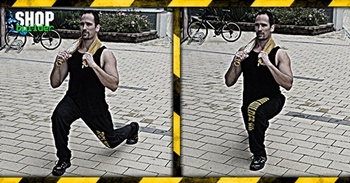

Ugrás a tartalomra
Ugrás a tartalomra
Testépítés
Kitörés
{kind=link}
Hatás
Ez a mozgás a combhajlítókat, a farizmokat és a négyfejű combizmot fejleszti. Miközben erőteljes izom-összehúzódás éri a combizmokat, ugyanakkor erőteljes nyújtó hatása is van a gyakorlatnak, ami ezáltal kiemelten hatékonnyá és komplexszé teszi. A kitörés helyesen végezve rendkívül intenzív, folyamatos terhelést biztosít, így mindenképpen érdemes beilleszteni a lábedzésedbe.
Kiinduló helyzet
Állj egyenesen. Egy nagy lépést lépj előre, és kinyújtott lábaddal lassan süllyedj guggolásba.
A mozgás
Amint leereszkedtél ebbe a helyzetbe, tégy egy újabb lépést előre a másik lábaddal, úgy, hogy közben kinyújtod az eddig behajlított lábadat, tehát fel-le ereszkedve lépegetsz előre, gyakorlatilag támadóállásban. A másik verzió, ha visszalépsz, és a másik lábaddal lépsz ki, majd azzal is vissza - így egy helyben kilépegetve, "helytakarékosan" tudod végezni a gyakorlatot.
Edzéstipp
Ha csak háromnegyedig nyomod fel magadat, vagy éppen csaknem teljesen, akkor állandó feszültséget tarthatsz fenn a négyfejű combizmokban. A kitörés edzés elején és végén egyaránt végezhető gyakorlat. A kitörés súllyal is végezhető: vagy fogj a kezeidben 1-1 kézi súlyzót, vagy a guggoláshoz hasonló tartással vegyél a hátadra egy rudat, tetszőleges súllyal megrakva, és így végezd a gyakorlatot.